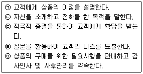
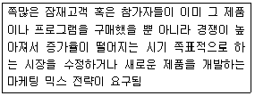
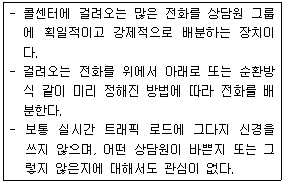
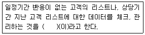
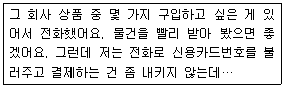

텔레마케팅관리사 (2007-03-04 기출문제)
1과목: 판매관리
1. 최근의 시장환경 변화가 마케팅 활동에 미치는 영향에 관한 설명으로 틀린 것은?
- 소비자 보호운동(Consumerism)이 확산됨에 따라 기업이 수행하는 마케팅 활동의 사회적 책임이 강조되고 있다.
- 소득 및 교육수준이 향상됨에 따라 소비생활이 다양화·고급화·개성화되고 생활의 질을 추구하는 방향으로 변화되고 있다.
- 취업주부의 비중이 높아짐에 따라 일괄구매를 선호하고 구매시간도 주로 퇴근 후나 주말에 집중되고 있다.
- 연령별 인구구조가 다이아몬드구조에서 피라미드구조로 바뀌었고, 고령인구가 늘어나게 되어 시장전략의 구조가 바뀌었다.
(정답률: 알수없음)

2. 아웃바운드 텔레마케팅 상품판매의 상담 순서로 바르게 나열된 것은?

- ㉡ → ㉣ → ㉠ → ㉢ → ㉤
- ㉡ → ㉠ → ㉣ → ㉢ → ㉤
- ㉡ → ㉢ → ㉣ → ㉠ → ㉤
- ㉡ → ㉠ → ㉢ → ㉣ → ㉤
(정답률: 알수없음)
3. 텔레마케팅이 기업에 주는 편익이 아닌 것은?
- 원가의 효율성
- 시장의 확대
- 제품이나 서비스에 대한 신속한 정보제공
- 고객과의 관계개선 및 유지
(정답률: 알수없음)
4. CRM을 통해 기업이 얻을 수 있는 성과가 아닌 것은?
- 우수고객유지
- 직원능력개발
- 교차판매
- 비용절감
(정답률: 알수없음)
5. CRM의 기본분류방법 중 프로세스 관점에 따른 분류가 아닌 것은?
- 브랜드(Brand) CRM
- 분석(Analytical) CRM
- 운영(Operational) CRM
- 협업(Collaborative) CRM
(정답률: 알수없음)
6. 효과적인 시장세분화의 요건으로 옳지 않은 것은?
- 측정가능성
- 가결기능
- 유통기능
- 촉진기능
(정답률: 20%)
7. 마케팅 믹스 중 기업이 소비자, 중간 구매자 또는 기타 이해관계가 있는 대중에게 제품 또는 기업에 관해서 정보를 전달하는 기능은?
- 제품기능
- 가격기능
- 유통기능
- 촉진기능
(정답률: 알수없음)
8. 텔레마케팅에 관한 용어해설이 잘못된 것은?
- DID(Direct Inward Dialing) - 관할 전화국에서 전화번호대역의 일부를 한 회사의 사설교환기에 전화가 걸리도록 할당하는 서비스
- CV(Call Vectoring) - 고객이 입력한 서비스 번호를 인지하고 고객번호를 임시 저장하는 것
- CP(Call Processing) - 고객이 인바운드 콜을 할 때 서비스번호 또는 고객번호를 입력하는 것
- ARS(Auto Response System) - 자동응답시스템으로 24시간 연중 서비스 가능
(정답률: 알수없음)
9. 제품의 수명주기를 연장시키기 위한 전략 중 제품을 수정이나 변형시키지 않고 기존 표적시장에서 소비자들의 참가를 증진시키는 것은?
- 시장침투
- 프로그램개발
- 시장개발
- 프로그램의 다각화
(정답률: 67%)
10. 다음은 제품의 수명주기 중 어떤 시기를 의미하는가?

- 도입기
- 성장기
- 성숙기
- 쇠퇴기
(정답률: 알수없음)
11. 자사의 제품에 관한 홍보를 소비자들의 입을 빌어 '입에서 입으로'라는 원리를 이용한 방식으로 짧은 시간 내에 큰 효과를 볼 수 있는 마케팅 활용 방식은?
- 타겟 마케팅
- 인터넷 마케팅
- 바이러스 마케팅
- 니치 마케팅
(정답률: 알수없음)
12. 고객관계관리(CRM)의 기본원칙이 아닌 것은?
- 고객의 정보를 전략적으로 활용하고 이 정보를 기업의 지적 자산으로 관리할 수 있어야 한다.
- 관계(Relationship)를 프로세서(Process)로 인식해 고객을 지원하고 고객을 위한 활동이 원스톱 서비스(One Stop Service) 체계로 전환될 수 있어야 한다.
- 고객관계관리(CRM)의 원칙은 상품판매만을 목적으로 하고 있다.
- 회사의 가치는 CRM의 가치, 즉 고객의 가치와 주주가 요구하는 가치가 균형을 이루어야 한다.
(정답률: 100%)
13. 신규 고객유지율, 기존 고객의 보유율, 고객반복이용률 등의 효과를 측정하는 데 사용되는 척도는?
- 고객신뢰도
- 고객반응률
- 고객기여도
- 고객성장률
(정답률: 50%)
14. 다음 설명에 해당하는 용어로 맞는 것은?

- Voice Announcement System(VAS)
- Unattended Call Distributor(UCD)
- Automatic Calling Distributor(ACD)
- Call Sequencer
(정답률: 알수없음)
15. 다음 중 가격의 특성이 아닌 것은?
- 수요가 탄력적인 시장상황에서 매우 쉽게 변경할 수 있는 요인이다.
- 마케팅 믹스 중에서 가장 강력한 경쟁도구이다.
- 예기치 않은 상황에 의해 가격이 결정된다.
- 정형화된 일정한 체계를 구축하기가 쉽다.
(정답률: 알수없음)
16. 텔레마케팅의 판매단계를 순서대로 나열한 것은?
- 준비 및 대상자 선정 → 텔레마케팅 전개 및 정보제공 → 고객니즈 파악 → 상담종료 → 분석과 데이터베이스화
- 준비 및 대상자 선정 → 고객니즈 파악 → 텔레마케팅 전개 및 정보제공 → 상담종료 → 분석과 데이터베이스화
- 분석과 데이터 베이스화 → 준비 및 대상자 선정 → 고객니즈 파악 → 텔레마케팅 전개 및 정보제공 → 상담종료
- 준비 및 대상자 선정 → 분석과 데이터베이스화 → 고객니즈 파악 → 상담종료 → 텔레마케팅 전개 및 정보제공
(정답률: 알수없음)
17. 데이터마이닝에 대한 설명으로 옳지 않은 것은?
- 데이터마이닝은 데이터웨어하우스를 구축한 다음 정보분석과정을 거쳐 경영전략을 지원하는 정보를 추출하는 것이다.
- 데이터마이닝은 일종의 데이터분석기법이다.
- 대용량의 고객데이터 분석이 복잡하여 고객데이터의 활용도를 저하시켰다.
- 데이터마이닝은 데이터 변수 간의 통계적인 상관관계분석이나 시계열분석 등이 이루어지는 다양한 통계처리과정을 말한다.
(정답률: 90%)
18. 아웃바운드 텔레마케팅의 대상인 고객의 정보에 대한 효율적인 관리방법이 아닌 것은?
- 고객정보의 지속적인 확충
- 고객정보 및 속성별 질적 개선
- 고객정보의 유출방지
- 고객속성에 따른 획일적 대응
(정답률: 알수없음)
19. 충성고객이 기업에 미치는 영향으로 볼 수 없는 것은?
- 새로운 고객창출의 용이성
- 보다 우수한 제품 및 서비스의 개발 및 제공
- 충성고객의 유지·관리를 위한 비용의 증대
- 기업이 추구하는 고객관리를 위한 새로운 전략 수립이 용이
(정답률: 알수없음)
20. 고객관계관리(CRM)의 정의에 해당하지 않는 것은?
- 고객에 대한 정확한 이해
- 고객이 원하는 제품과 서비스의 지속적 제공
- 고객의 평생가치 극대화
- 고객의 노후보장
(정답률: 알수없음)
21. 소비자의 구매의사결정과정이 올바른 것은?
- 정보탐색 → 문제인식 → 대안의 평가 및 선택 → 구매 → 구매 후 행동
- 대안의 평가 및 선택 → 문제인식 → 정보탐색 → 구매 → 구매 후 행동
- 문제인식 → 대안의 평가 및 선택 → 정보탐색 → 구매 → 구매 후 행동
- 문제인식 → 정보탐색 → 대안의 평가 및 선택 → 구매 → 구매 후 행동
(정답률: 알수없음)
22. RFM 모델에 대한 설명으로 틀린 것은?
- RFM 분석을 위해서는 고객 Database의 축적과 가공이 필요하다.
- R은 최근구매일, F는 구매빈도, M은 구입총금액을 말한다.
- RFM 포인트에서 가장 중요한 것은 F요소이다.
- RFM은 마케팅 담당자의 목적에 따라 각각 임의로 가중치를 부여할 수 있다.
(정답률: 알수없음)
23. 가장 일반적인 소비자 반응 순서는?
- 흥미유발(I) → 주목(A) → 욕구(D) → 행동(A)
- 주목(A) → 흥미유발(I) → 욕구(D) → 행동(A)
- 욕구(D) → 흥미유발(I) → 주목(A) → 행동(A)
- 주목(A) → 욕구(D) → 흥미유발(I) → 행동(A)
(정답률: 알수없음)
24. 다음 중 아웃바운드 텔레마케팅으로 볼 수 없는 것은?
- 통신사에서 우수고객관리를 위해 전화를 걸어 부가서비스 안내를 한다.
- 쇼핑몰에서 상품발송 후 배송이 잘 되었는지 확인 전화를 한다.
- 보험사에서 가망고객에게 전화로 보험상품의 판매를 시도한다.
- 카드사에서 고객으로부터 걸려온 전화로 결제금액을 안내한다.
(정답률: 알수없음)
25. 시장세분화의 기준 중 인구통계적 변수에 해당하지 않는 것은?
- 나 이
- 성 별
- 개 성
- 소 득
(정답률: 알수없음)
2과목: 시장조사
26. 시장조사에서 설문지 응답자의 권리를 보호하기 위한 준수사항으로 잘못된 것은?
- 응답자에게는 조사면접에 꼭 참가해야 할 의무가 없다.
- 조사자는 응답자가 조사면접에 익숙하지 못하기 때문에 면접의도에 맞는 응답을 유도한다.
- 조사자는 응답자에게 질문을 객관화함으로써 응답자의 사생활을 침해하지 말아야 한다.
- 조사자는 응답자와 조사면접을 할 때 면접에 관한 세칙과 지시사항에 따라서 수행해야 한다.
(정답률: 알수없음)
27. 질문의 유형 중 폐쇄형 질문의 장점이 아닌 것은?
- 질문지에 열거하기에는 응답범주가 너무 많을 경우 사용하면 좋다.
- 질문에 대한 대답이 표준화되어 있기 때문에 비교가 가능하다.
- 부호화와 분석이 용이하다.
- 민감한 주제에 보다 적합하다.
(정답률: 알수없음)
28. 효과적인 전화조사를 위해 고려해야 할 사항이 아닌 것은?
- 응답자가 불편을 느끼지 않는 시간대를 선택한다.
- 전화조사시에는 경제성을 고려하여 다양한 주제의 질문을 통하여 많은 내용을 조사한다.
- 전화조사시 적당한 통화시간은 5분 이내이며 10개 전후의 문항이 적당하다.
- 전화조사는 중간에 전화가 끊기거나 소음 등에 방해를 받지 않도록 한다.
(정답률: 62%)
29. 의사소통수단에 의한 분류에 해당되지 않는 것은?
- 대인면접법
- 전화면접법
- 우편면접법
- 역할면접법
(정답률: 알수없음)
30. 직접적인 표본추출방법에 대한 설명으로 틀린 것은?
- 지역적 표본추출시 전화번호부에 표기된 지역번호 구분이 아니라 행정적 경계에 따라 표본단위를 정하는 것이 좋다.
- '가나다'순으로 되어 있는 기존 전화번호부에서 표본을 추출할 때에는 체계적 표본추출법을 사용하는 것이 좋다.
- 전화번호부를 활용할 때에는 맨 앞과 맨 끝은 배제하는 것이 좋다.
- 최초의 목적대로, 그리고 하나의 규정이 있으면 그에 따라 계속한다.
(정답률: 알수없음)
31. 질문지 배열에 관한 설명으로 틀린 것은?
- 시작하는 질문은 응답자의 흥미를 유발하는 것으로 쉽게 대답할 수 있는 것으로 한다.
- 개인의 사생활 등 민감한 질문은 가급적 뒤에 배열한다.
- 특수한 것을 먼저 묻고 일반적인 것을 그 다음에 질문한다.
- 비슷한 형태로 질문을 계속하면 응답에 정형이 생길 수 있기 때문에 이를 피하도록 한다.
(정답률: 알수없음)
32. 전화조사에서 무응답 오류의 의미로 맞는 것은?
- 데이터 분석에서 나타나는 오류
- 부적절한 질문으로 인하여 나타나는 오류
- 응답자의 거절이나 비접촉으로 나타나는 오류
- 조사와 관련 없는 응답자를 선정하여 나타나는 오류
(정답률: 알수없음)
33. 전화조사의 장점이 아닌 것은?
- 빠른 시간 내에 저렴한 조사비용으로 가능하다.
- 개인면접을 위해 만나기 힘든 조사대상자에 대한 조사가 용이하다.
- 조사자들에 대한 감독이 가능하다.
- 응답률을 높일 수 있고 성실한 답변을 유도할 수 있다.
(정답률: 알수없음)
34. 다음 중 설문지의 작성원칙이 아닌 것은?
- 질문은 간결하게 한다.
- 응답자의 수준에 맞는 언어를 사용한다.
- 규범적인 응답을 자아내도록 한다.
- 질문은 가치중립적이어야 한다.
(정답률: 알수없음)
35. 다음 중 가설의 특성이 아닌 것은?
- 가설은 실증조사를 통하여 옳고 그름을 판단할 수 있어야 한다.
- 가설은 다른 개념의 관계를 표시하기 때문에 동의반복적이어야 한다.
- 가설은 표현뿐만 아니라 형태적으로도 논리적이고 간결하여야 한다.
- 가설검증의 결과는 광범위하게 적용될 수 있어야 한다.
(정답률: 알수없음)
36. 다음 중 비확률 표본추출방법에 해당하는 것은?
- 단순무작위표본추출법
- 편의표본추출법
- 층화표본추출법
- 군집표본추출법
(정답률: 알수없음)
37. 광의로 문헌조사라고도 하며 각종 학술연구지, 상업잡지, 통계자료집 등과 경영학, 사회학과 같은 다양한 분야의 자료를 조사하는 방법은?
- 질적 조사방법
- 1차 자료분석방법
- 2차 자료분석방법
- 파일럿조사
(정답률: 알수없음)
38. 시장조사에 대한 설명으로 틀린 것은?
- 마케팅 관련 자료를 체계적으로 수집·기록·처리·분석하는 활동이다.
- 마케터들이 마케팅 활동시 근거자료로 활용된다.
- 마케팅 활동의 목표와 목적이 된다.
- 과학적인 접근을 통하여 정확하고 신뢰할 수 있어야 한다.
(정답률: 31%)
39. 시장조사에 있어 과학적 연구방법에 대한 설명으로 옳지 않은 것은?
- 과학적 조사는 의사결정문제를 해결하기 위하여 조사절차를 체계적이고 실증적으로 수행하는 것을 말한다.
- 과학적 조사는 현상 속에서 발생하는 연관성에 대해 가정을 설정하고 이를 체계적·실증적·핵심적으로 조사하는 것이다.
- 과학적 접근방법만이 사회현상의 진리를 터득하는 유일한 방법으로 근대 산업사회 발전의 초석이 되었다.
- 과학적 조사는 추론에 근거하며, 귀납적 방법과 연역적 방법으로 나눈다.
(정답률: 알수없음)
40. 마케팅정보시스템과 의사결정지원시스템의 비교설명으로 틀린 것은?
- 의사결정지원시스템은 마케팅정보시스템보다 비구조화된 문제해결에 유용하다.
- 의사결정지원시스템은 마케팅정보시스템보다 사용자 중심적이다.
- 의사결정지원시스템은 마케팅정보시스템보다 유연성과 적응성을 강조한다.
- 의사결정지원시스템은 마케팅정보시스템보다 마케팅 의사결정에 적합하다.
(정답률: 알수없음)
41. 시장조사 중 제품조사에 대한 설명으로 맞는 것은?
- 브랜드 선정에서의 적정한 가격을 조사한다.
- 가격변화에 대한 반응을 조사한다.
- 적절한 제품디자인을 결정하는 조사를 한다.
- 도매 및 소매의 장악 정도를 조사한다.
(정답률: 알수없음)
42. 다음 주요 자료수집방법의 비교표이다. 괄호 안의 순서가 올바른 것은? 복원중 (정확한 보기내용을 아시는분께서는 오류 신고를 통하여 보기 내용 작성 부탁드립니다.) (문제 오류로 정답은 1번입니다.)
- ㉠ - 높음, ㉡ - 낮음, ㉢ - 낮음
- ㉠ - 낮음, ㉡ - 높음, ㉢ - 낮음
- ㉠ - 낮음, ㉡ - 낮음, ㉢ - 높음
- ㉠ - 높음, ㉡ - 높음, ㉢ - 낮음
(정답률: 알수없음)
43. 사전검사에 관한 설명으로 틀린 것은?
- 사전검사를 통해 질문들이 갖는 문제점을 발견할 수 있다.
- 사전검사는 반드시 많은 수의 응답자를 상대로 실시할 필요가 없다.
- 질문지의 초안이 일단 작성된 후 사전검사를 한다.
- 사전검사의 방법은 본조사에서 사용하고자 하는 방법과 동일할 필요는 없다.
(정답률: 79%)
44. 전화조사에서 조사항목의 우선순위가 가장 낮은 것은?
- 특정기업에 대한 선호도 여부
- 특정사실에 대한 판단(찬성/반대)의 여부
- 주로 구매하는 상품에 대한 질문
- 고객의 신변(소득, 주거, 교육 등)에 관한 사항
(정답률: 알수없음)
45. 다음 괄호 안에 들어갈 말로 알맞은 것은?

- 리스트 클리닝
- 데이터탐색
- 자료추출
- 모집단관리
(정답률: 알수없음)
46. 마케팅조사에 필요한 정보 중 한 개인이 환경에 어떻게 반응하는지 또는 개인의 차이를 나타내주는 등의 정보를 제공하는 것은?
- 라이프 스타일
- 인구 통계적 정보
- 동 기
- 개 성
(정답률: 알수없음)
47. 독립변수와 종족변수의 사이에서 독립변수의 결과인 동시에 종족변수의 원인이 되는 변수는?
- 외적 변수
- 선행변수
- 억제변수
- 매개변수
(정답률: 40%)
48. 마케팅 조사설계시 내적 타당성을 저해하는 요소에 해당되지 않는 것은?
- 통계적 회귀
- 특정사건의 영향
- 사전검사의 영향
- 반작용효과
(정답률: 알수없음)
49. 컴퓨터 지원 전화면접(CATI)의 장점이 아닌 것은?
- 컴퓨터화된 설문지를 이용하기 때문에 텔레마케터에 대한 사전교육이 전혀 필요 없다.
- 컴퓨터가 자동으로 전화번호를 돌리고 접속이 이루어지기 때문에 면접시간이 감소된다.
- 면접조사원이 모니터에 나타난 질문들을 읽고 즉시 컴퓨터에 응답자들의 답변을 기록하기 때문에 자료의 질이 강화된다.
- 조사 후 설문지의 코팅, 컴퓨터의 자료를 입력하는 번거로운 단계들이 많이 생략된다.
(정답률: 알수없음)
50. 조사통계를 위해 일반적으로 사용하는 프로그램은?
- Windows
- SPSS
- Oracle
- SQL Server
(정답률: 37%)
3과목: 텔레마케팅관리
51. 텔레마케팅에서 지향하는 마케팅 전략으로 옳은 것은?
- 판매 중심적 마케팅 전략
- 고객 중심적 마케팅 전략
- 제품 중심적 마케팅 전략
- 기업 중심적 마케팅 전략
(정답률: 알수없음)
52. 평균처리시간이 길어질 경우 생산성관리를 위한 조치로 적합하지 않은 것은?
- 모든 상담을 ARS로만 처리한다.
- 근무집중도가 떨어지는 이유가 있는지를 확인한다.
- 스크립트가 불충분하거나 부정확한지 확인한다.
- 적정인력의 투입 여부를 확인한다.
(정답률: 알수없음)
53. 고객의 행동에 따른 단계 중 자사의 제품 서비스를 1회 구매한 자로서, 아직은 완전한 고객이라기보다는 고객이 될 수 있고 경쟁사의 고객이 될 수도 있는 자는?
- 구매 용의자
- 비자격잠재자
- 최초구매자
- 탈락고객
(정답률: 알수없음)
54. 모니터링을 효과적으로 실행하는 방법으로 잘못된 것은?
- 모니터링의 평가기준을 텔레마케터가 충분히 숙지할 수 있도록 한다.
- 모니터링의 평가기준은 털레마케터의 수준이 우선되어야 한다.
- 모니터링 평가결과에 따른 개별 코칭이 필요하다.
- 모니터링 평가기준은 정기적으로 수정보완되어야 한다.
(정답률: 알수없음)
55. 텔레마케팅의 분류 중 틀린 것은?
- 착/발신 주체에 따른 분류
- 대상에 따른 분류
- 고객 니즈에 따른 분류
- 운영방법에 따른 분류
(정답률: 알수없음)
56. 아웃바운드 콜센터에서 상담원 개인별 성과를 나타내주는 양적 지표로 볼 수 없는 것은?
- 시간당 통화 콜수(CPH)
- 시간당 성공 콜수(SPH)
- l인당 매출액
- 평균통화대기시간(AQT)
(정답률: 알수없음)
57. 콜센터의 리더가 상담원에게 필요한 내용을 직접 가르치며 상담원의 능력 향상이나 업무처리과정에서 필요한 때마다 수시로 실시하는 것은?
- 코 칭
- 역할연기
- 브레인스토밍
- 강 의
(정답률: 80%)
58. 텔레마케터의 업무수칙과 거리가 먼 것은?
- 고객의 특수한 요구나 고충 등은 스스로 판단하여 해결한다.
- 기업의 이미지 향상을 위해 항상 노력해야 한다.
- 스크립트에 따라 고객에게 대응하는 것을 원칙으로 하며, 상황변화에 따라 신속하고 유연하게 대응한다.
- 예기치 않은 상황에 대비하여 임기응변방안을 준비해 둔다.
(정답률: 알수없음)
59. 콜센터의 정량적 평가지표인 서비스 레벨에 대한 설명으로 틀린 것은?
- 전화응대 스크립트의 품질 수준을 나타내는 지표이다.
- 'X%의 콜을 Y시간 내에 응대'와 같은 형식으로 표시한다.
- 통화 고객들의 통화대기시간에 대한 평균적인 수준을 가장 잘 나타내 주는 지표이다.
- 인바운드 콜센터의 대표적인 관리지표 중 하나이다.
(정답률: 알수없음)
60. 아웃바운드 텔레마케팅 서비스를 수행하면서 고객의 청약철회가 발생한 경우 취해야 할 행동으로 틀린 것은?
- 사업자는 계약상 특별한 고지가 없는 이상, 청약철회기간 동안 소비자의 청약철회에 관한 권리를 보장해야 한다.
- 청약철회와 관련한 입증의 책임은 소비자에게 있다.
- 사업자의 환불은 소비자가 사용한 대금지불수단 또는 소비자가 동의하는 기타 지불수단을 통해 이루어져야 한다.
- 사업자의 귀책사유로 인해 소비자가 청약철회를 하는 경우 그 반송비용은 사업자가 부담하여야 한다.
(정답률: 알수없음)
61. 고객 콜센터를 활용하여 고객반응을 향상시키는 방안 중 전화를 건 사람의 전화번호를 수신자측에 나타내주는 장치는?
- ARS(Auto Response System)
- ANI(Automatic Number Identification)
- PBX(Private Branch Exchange)
- VRU(Voice Response Unit)
(정답률: 알수없음)
62. 스크립트에 대한 설명으로 틀린 것은?
- 텔레마케팅 활동시 고객과 대화를 원활히 진행하기 위해 사전에 작성한 대화대본이다.
- 인바운드, 아웃바운드에 관계없이 고객의 상황에 따라 탄력적으로 대응할 수 있도록 융통성 있게 구성해야 한다.
- 텔레마케팅을 실시할 때 스크립트에 대한 사전 테스트는 필요하지 않다.
- 텔레마케터와 고객이 유연하게 대화할 수 있도록 흐름이 자연스러워야 한다.
(정답률: 알수없음)
63. 아웃바운드 텔레마케팅의 특징이 아닌 것은?
- 마케팅 목표와 전략방안이 비교적 뚜렷하여 공격적이다.
- 콜센터 시스템, 컴퓨터 보급의 확대 등에 의존하는 경향이 점차 강해지고 있다.
- 데이터베이스 마케팅 기법을 활용할수록 위력적이다.
- 스크립트의 작성과 활용이 중요하다.
(정답률: 알수없음)
64. 직장 내 교육훈련(OJT)의 장점이 아닌 것은?
- 별도의 시설 없이 적은 비용으로 경제적인 교육훈련의 실시가 가능하다.
- 많은 종업원을 대상으로 동시에 체계적인 교육훈련이 가능하다.
- 상사와 부하 간의 이해와 협동심을 촉진시킬 수 있다.
- 종업원의 동기부여에 기여할 수 있다.
(정답률: 46%)
65. 한국산업규격(KS)의 텔레마케팅 서비스-기반구조에서 제조하는 서비스 평가표에 포함되지 않는 것은?
- 평가절차와 권한체계
- 정기적이고 지속적인 평가주기
- 처리 콜량에 대한 조직 내 순위
- 서비스에 관한 평가항목
(정답률: 알수없음)
66. 콜센터의 경쟁력 제고를 위한 방안으로 잘못된 것은?
- 상담원의 교육훈련 프로그램운영
- 급여체계와 복리후생 개선
- 행정사무직원의 콜센터관리
- 콜센터 리더육성 프로그램운영
(정답률: 알수없음)
67. 콜센터 운영의 생산성을 제고하기 위한 고려사항이 아닌 것은?
- 생산성 관리방법과 범위의 결정
- 생산성 관리기준의 설정
- 생산성 측정 및 분석
- 상담원의 수 증대
(정답률: 알수없음)
68. 콜센터에서 모니터링 담당자(QAA ; Quality Assurance Administrator)의 역할에 대한 설명으로 맞는 것은?
- 콜센터장을 보좌하여 텔레마케터들을 관리하고 현장 지도하는 역할
- 콜센터에 사용되는 장비의 성능을 지속적으로 감시하고 관리하는 역할
- 텔레마케터들의 통화내용에 대해 평가하고 개선점을 찾아내 개선할 수 있도록 도와주는 역할
- 일정자격 수준을 갖춘 텔레마케터들을 채용할 수 있도록 관리하는 역할
(정답률: 알수없음)
69. SMART 성과목표설정항목 중 S에 해당하는 것은?
- Specific
- Special
- Speed
- Social
(정답률: 알수없음)
70. 아웃바운드 텔레마케팅과 관계 있는 것은?
- 고객불만접수
- ARS
- 해피콜
- 전화교환 서비스
(정답률: 알수없음)
71. 아웃바운드 텔레마케팅의 다이얼링 기법 중 전화를 받을 수 있는 아웃바운드 상담원이 있을 경우에만 시스템이 고객에게 자동으로 전화를 걸어주는 방식은?
- 프로그레시브 다이얼링
- 매뉴얼 다이얼링
- 미리보기 다이얼링
- 예측 다이얼링
(정답률: 55%)
72. 콜센터를 구성하는 시스템의 기능 중 착신하는 콜을 텔레커뮤니케이터에게 균등하게 나누어 주고 통화상황에 대한 데이터들을 출력시키는 것은?
- RDD(Random Digit Dialing)
- ACD(Automatic Call Distribution)
- DCD(Database Computer Distribution)
- CAD(Call Accounting Dialing)
(정답률: 알수없음)
73. 성공적인 텔레마케팅을 위하여 가장 우선적으로 갖추어야 할 요소는?
- 텔레마케팅 실시체제의 구축
- 텔레마케팅 전략의 수립
- 텔레마케팅 콜 매니지먼트
- 텔레마케팅 효과측정
(정답률: 알수없음)
74. OJT를 위한 단계로 적당한 것은?
- 학습준비 → 업무설명 → 업무실행 → 결과확인
- 업무실행 → 학습준비 → 업무설명 → 결과확인
- 업무실행 → 결과확인 → 업무설명 → 학습준비
- 업무실행 → 업무설명 → 학습준비 → 결과확인
(정답률: 알수없음)
75. 성과가 낮은 경우 콜센터 관리자들이 점검해야 할 사항이 아닌 것은?
- 응대 준비의 중요성에 대한 직원교육 및 동기부여의 실패 여부 점검
- 신입직원에 대한 수퍼바이저의 지원 및 코칭이 유용하지 않은지 점검
- 텔레마케터가 근무스케줄을 잘못 알고 있는지 점검
- 직원들이 휴식 및 이석시간을 사용하지 못하도록 조치
(정답률: 90%)
4과목: 고객응대
76. 고객과 대화시 친밀감을 형성하는 방법으로 옳은 것은?
- 고객의 말에 흠이 없는지 관찰한다.
- 질문과 답변을 스크립트대로만 한다.
- 고객의 거절방지를 위해 바로 본론을 말한다.
- 고객에게 관심을 갖고 고객욕구를 파악한다.
(정답률: 알수없음)
77. 인바운드 텔레마케팅의 방법으로 틀린 것은?
- 전화벨이 3번 울리기 전에 받아야 하고 인사말, 소속, 성명을 정확히 밝힌다.
- 고객의 불만사항을 적극적으로 경청한 후 진심으로 사과하고 불만에 대한 고객입장을 공감해야 한다.
- 끝내기 언어를 잘 활용하여야 하며 고객이 끊는 것을 확인하고 2~3초 후에 수화기를 내려 놓는다.
- 고객의 요구를 가능한 빨리 파악하여 고객이 요구를 다 말하기 전에 신속히 처리한다.
(정답률: 64%)
78. 다음 용어에 대한 설명으로 옳은 것은? 하나의 제품이나 서비스 제공 과정에서 다른 제품이나 서비스에 대해 판매를 촉진시키는 마케팅 기법
- 업 셀링(Up-selling)
- 크로스 셀링(Cross-selling)
- 마케팅 믹스(Marketing Mix)
- 아웃바운드 텔레마케팅(Outbound Telemar keting)
(정답률: 알수없음)
79. 텔레마케터의 효과적인 경청기술이 아닌 것은?
- 고객의 말을 끊지 말고 끝까지 주의 깊게 들어야 한다.
- 주관적인 판단이나 감정을 통해 쉽게 이해하려고 노력한다.
- 고객의 이야기에 대한 관심을 구체적으로 표현한다.
- 확실하지 않은 내용은 다시 한번 정중하게 물어본다.
(정답률: 알수없음)
80. 성공하는 텔레마케터가 되기 위해 가져야 할 태도로서 적합하지 않은 것은?
- 항상 고객의 문제를 도와주고 해결해주는 전문가라는 자긍심을 갖는다.
- “고객과의 약속은 반드시 지킨다.”라는 철학을 갖고 업무에 임한다.
- 자신의 상담능력을 향상시키기 위해 자기계발에 최선을 다한다.
- 고객불만의 수용과 처리에 있어 상담자 자신의 권한이 제한되어 있으므로 실제적인 처리보다는 일차적인 응대에만 최선을 다한다.
(정답률: 알수없음)
81. 인바운드 상담분야가 아닌 것은?
- 국가 및 공공단체의 민원접수처리
- 주문접수처리
- 상품에 관한 문의상담
- 상품의 적극적인 판매와 홍보
(정답률: 알수없음)
82. 효과적인 화법의 요소가 아닌 것은?
- 성실성
- 간접성
- 명료성
- 직접성
(정답률: 알수없음)
83. 고객응대에 대한 설명으로 틀린 것은?
- 텔레마케터가 비대면 방식으로 갖는 커뮤니케이션이다.
- 대화예절이 수반되며 각종 정보 숙지, 애로사항, 불만사항의 문제해결 관련 상담의 전문성이 중요하다.
- 고객의 욕구 파악을 위해서는 부정적인 질문과 비판도 중요하다.
- 고객응대시 성의, 창의, 열의 등 기본적인 마음가짐이 있어야 한다.
(정답률: 알수없음)
84. 고객에게 전달할 내용을 선정할 때 유의할 사항으로 틀린 것은?
- 상황에 알맞은 내용을 선정한다.
- 텔레마케터가 충분히 알고 있는 내용을 선정한다.
- 텔레마케터의 수준에 맞는 내용을 선정한다.
- 상대방에 대한 정보를 바탕으로 하여 내용을 선정한다.
(정답률: 55%)
85. 소비자상담을 줄이는 방법이 아닌 것은?
- 소비자의 합리적 구매행동개발
- 기업의 양질의 서비스와 제품공급
- 공정한 광고 활동
- 정부와 지방자치단체의 감독 중지
(정답률: 알수없음)
86. 다음 중 언어적 메시지에 해당되는 것은?
- 보고서
- 표 정
- 음성의 고저
- 몸 짓
(정답률: 알수없음)
87. 고객응대 서비스의 7C가 아닌 것은?
- 사고(Consideration)
- 정확(Correctness)
- 일관성(Coherence)
- 자신감(Confidence)
(정답률: 알수없음)
88. 고객 컴플레인의 긍정적인 측면이 아닌 것은?
- 자사 상품(서비스)을 평가하는 유용한 자료
- 상담원의 서비스 수준을 평가하는 유용한 자료
- 고객으로부터 중요한 정보의 수집
- 신속한 컴플레인처리는 회사의 이미지 상승
(정답률: 50%)
89. Werhnch and Koontz의 커뮤니케이션과정 모델에 따른 커뮤니케이션과정이 바르게 나열된 것은?
- 발신 → 해독 → 이해 → 메시지 → 기호화 → 수신
- 발신 → 이해 → 기호화 → 메시지 → 해독 → 수신
- 발신 → 해독 → 기호화 → 메시지 → 수신 → 이해
- 발신 → 기호화 → 메시지 → 수신 → 해독 → 이해
(정답률: 알수없음)
90. 고객속성데이터에 대한 설명으로 올바른 것은?
- 거래연수 등 거래와 연관된 데이터이다.
- 고객의 구매습성을 나타낸 데이터이다.
- 고객의 이름, 연령 등 생활에 대한 전반적인 상황기록 데이터를 의미한다.
- CRM이라고도 한다.
(정답률: 알수없음)
91. 다음 중 고객만족의 3요소가 아닌 것은?
- 상 품
- 기 업
- 서비스
- 이미지
(정답률: 알수없음)
92. 텔레마케팅 커뮤니케이션과정 중 다양한 고객유형에 따른 경청방법이 잘못 연결된 것은?
- 번거롭게 빙 돌려서 말하는 고객 - 질문의 형식으로 대안이나 반대의 의견을 말한다.
- 완고하고 고지식한 고객 - 성실하고 진지한 태도로 듣는다.
- 쾌활하고 자기 표현을 잘하는 고객 - 같이 즐기며 듣는다.
- 말이 없고 까다로운 고객 - 조용하고 느긋하게 듣는다.
(정답률: 알수없음)
93. 텔레마케터가 전화응대시 두려움을 갖는 이유에 해당되지 않는 것은?
- 외모에 대한 콤플렉스
- 상담기술능력에 대한 자신감 결여
- 상품, 서비스 지식 부족
- 거절에 대한 불안감
(정답률: 알수없음)
94. 커뮤니케이션에 대한 설명 중 틀린 것은?
- 감정, 태도, 사실, 신념 등을 전달하는 과정이다.
- 언어와 비언어를 사용한다.
- 양방향적인 과정이다.
- 기본 구성요소는 송신자와 수신자이다.
(정답률: 알수없음)
95. 다음의 고객표현에 대한 상담원의 응대화법으로 가장 적절한 것은?

- 카드결제가 가장 빠르지만 내키지 않으시면 온라인으로 송금을 해주시거나 직접 방문하셔서 구입하시는 방법도 있습니다.
- 다른 방법은 전화주문만큼 빠르지 않습니다. 카드결제를 하셔야 빨리 상품을 받으실 수 있으니 카드결제를 하시기 바랍니다.
- 요즈음은 거의 모든 고객들이 전화로 신용카드 번호를 불러주십니다. 문제 없습니다.
- 그러면 좀더 생각해 보시고 다시 전화주시기 바랍니다.
(정답률: 알수없음)
96. 서비스의 특징에 해당되지 않는 것은?
- 무형성
- 저장성
- 일과성
- 불가역성
(정답률: 알수없음)
97. 커뮤니케이션의 목적이 아닌 것은?
- 영향력 행사
- 정보교환
- 감정표현
- 자유방임
(정답률: 알수없음)
98. 커뮤니케이션의 과정에서 전달과 수신 사이에 발생하며 의사소통을 왜곡시키는 요인을 의미하는 것은?
- 잡음(Noise)
- 해독(Decoding)
- 피드백(Feedback)
- 부호화(Encoding)
(정답률: 알수없음)
99. 개방형 질문에 관한 설명으로 가장 옳은 것은?
- Yes/No 답변을 유도할 수 있다.
- 상담원이 유도하는 방향으로 고객을 리드하는 것이 용이하다.
- 전체 상담시간의 조절이 용이하다.
- 고객 상황에 대한 명확한 이해가 용이하다.
(정답률: 알수없음)
100. 화가 난 고객과의 상담시 적절한 응대요령으로 옳지 않은 것은?
- 고객의 문제가 이미 상담원이 잘 알고 있는 문제라 하더라도, 고객이 충분히 말할 수 있도록 고객을 방해하지 않는다.
- 고객이 말하는 사실보다 고객의 감정을 헤아리며 공감적 표현을 전달한다.
- 일상적인 불만으로 해결이 가능하더라도 바로 처리 하기보다는 그 고객만을 위해 특별한 배려임을 강조하며 시간을 끈다.
- 문제와 고객의 불만과정에 따른 적절한 사과를 잊지 않는다.
(정답률: 알수없음)
연령별 인구구조가 다이아몬드구조에서 피라미드구조로 바뀌었다는 것은, 과거에는 젊은 층이 많았지만 고령층은 적었던 반면, 현재는 고령층이 많아지면서 인구 구조가 변화하고 있다는 것을 의미한다. 이러한 변화는 마케팅 활동에서도 고령층을 대상으로 한 전략이 더욱 중요해지고, 제품이나 서비스의 디자인, 가격, 판매 채널 등이 변화할 필요가 있다는 것을 시사한다.